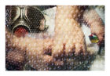
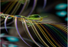
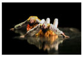
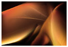
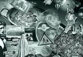
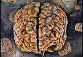
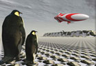
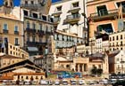
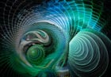

The Open Gallery
click thumbnail for full size image Michael P. Ammel (the P. stands for Peter) is a 58 year young "digital artist", a native German, today living with his family in Sete, on top of the hill St. Clair, Southern France . He is mainly an autodidact who came from painting, sculpturing and photography into the field of digital image creation. A natural way for him, that offers unlimited ways of expression. He feels like being just an "image maker" who uses a wide range of technologies to cross new boarders and communicate his messages, with finally a simple and the most common "code" to our species - the IMAGE. Digital Art is therefore an unlimited space for new thoughts without the typical, often static frames. For Michael there seems to be a wide underlying common concept between painting, music, dance and even photography, it's the form, the light, the colour, the rhythm and the emotion. Humour and irony, with a special regard to our "real life" are often the base of Michael's photo montage and collage. Political and philosophical aspects do play a role in many of his images. He likes what he calls the use of "visual metaphors" to get the message across. As a long-time "fractal generator" he loves to integrate these small miracles into his images.
Michael P. Ammel









Just a couple of thoughts from the German Artist, Joseph Beuys, who brought some new ideas to the "Art Machinery". He wrote: "to make people free is the aim of art; therefore art is the science of freedom. Creativity isn't the monopoly of artists, this is the crucial fact I've come to realize, and this broader concept of creativity is my concept of art when I say everybody is an artist I mean everybody can determine the content of life in his particular sphere, whether in painting, music, engineering, carrying for the sick, the economy or whatever. All around us the fundamentals of life are crying out to be shaped or created." Just think about it for a moment. At least Michael loves that straightforward concept of art.
He uses NIKON cameras, WACOM tablet, Adobe Photoshop CS2, PaintShop Pro, cinema 4d, Bryce, vue d' esprit and various fractal generators.
Michael is a computer veteran and spend 25 years in the industry in various senior management positions around the world. He loves the diversity of human beings and the unlimited types of personal expression. Today he is just another "earthling", who is trying to push his creativity to the limits. And don't forget: Imagination is more important than knowledge - Albert Einstein and Moore said, "Art is the expression of imagination, not the duplication of reality"...and always keep in mind: try to stay happy, even when it is tough sometimes... I cross my fingers for you.